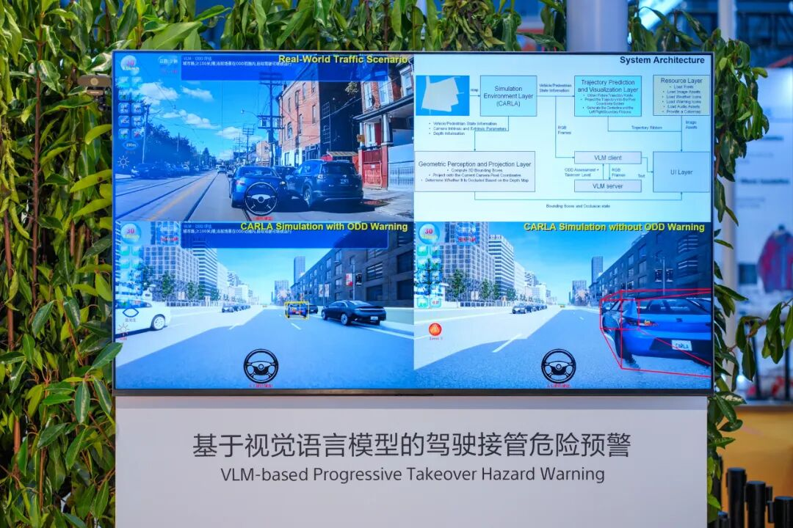
뉴스
기술의 변화, 매일 한눈에.
카메라 · 스마트폰 · AI, 해외 테크 소식을 모아 전합니다.
최근 발행2026-11-09
새로 들어온 소식
최신 뉴스
전체 4,224개 기사Fotorgear Campix 카메라 크라우드 펀딩 등장: 36장만 촬영 가능한 디지털카메라
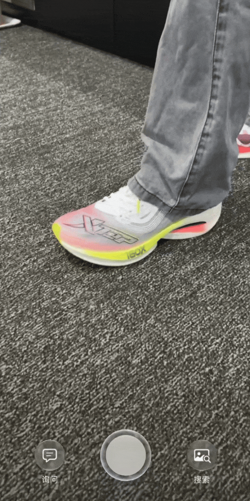
득물(Dewu) 앱, Apple 중국 본토 Apple Intelligence 연동 발표: iPhone으로 상품 촬영 시 AI로 정보 빠르게 검색

첫 출시가 999위안에서 788위안으로: Coolpad COOL X Wide 바 타입 스마트폰 오늘 판매 시작, MediaTek Helio G99 칩 탑재
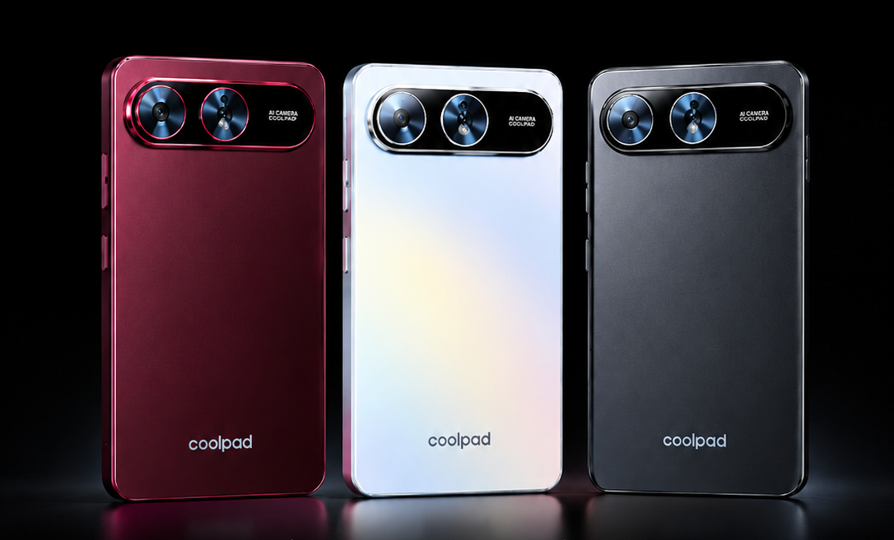
안드로이드 최초의 와이드 스마트폰, Coolpad Cool X Wide 출시
취소된 2021년형 Nokia G20 5G 스마트폰 공개: Unisoc T7520 + 4GB RAM
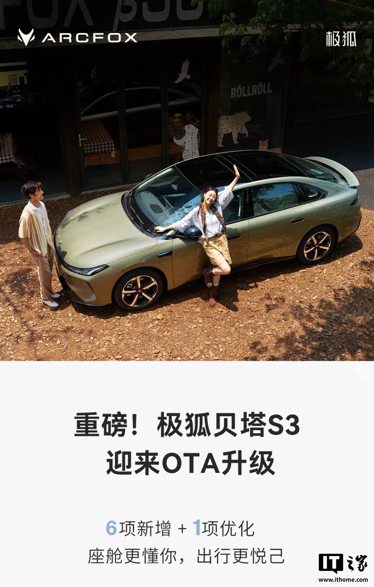
BAIC 아크폭스 알파 S3, Apple CarPlay, Huawei HiCar 등 스마트폰 연결 기능 OTA 업데이트 제공
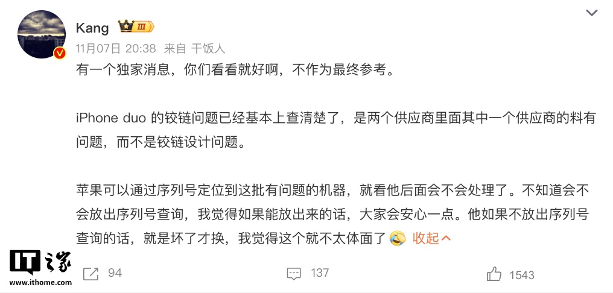
Apple 최초 폴더블 디스플레이 스마트폰 iPhone Duo '디스플레이 균열' 추적: 공급업체 원자재 문제로 알려져
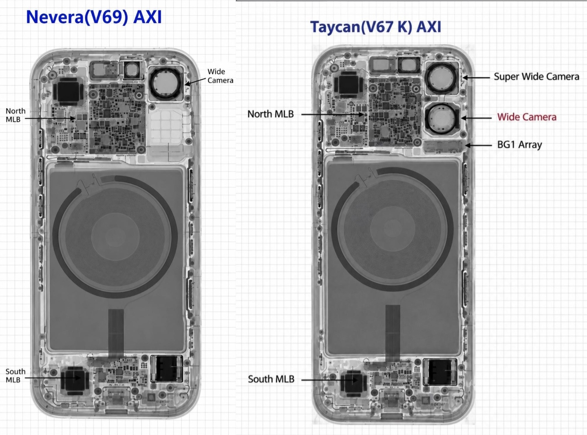
Apple iPhone 18/18e 시리즈 모델 X-레이 이미지 유출: 두 스마트폰 일부 금형 공유, 4430mAh 배터리 탑재
구르만, Apple CEO 테르누스 "취임 후 3가지 과제", 소프트웨어 책임자 페데리기에게 AI 과감하게 추진할 것을 촉구
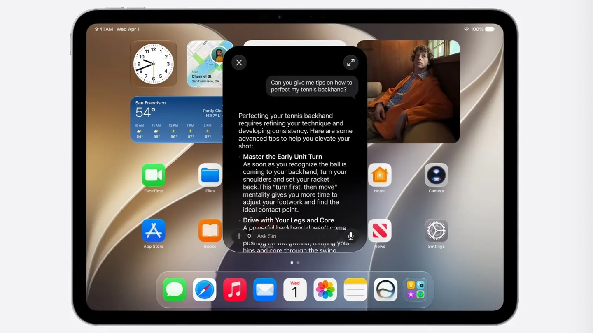
구르만, Apple Siri AI 팀 대대적 개편 예상, 로크웰 엔지니어링 부사장 내년 퇴사 고려
Xiaomi HyperOS 4 최근 복구 진행 상황 공개, Xiaomi 17 시리즈 스마트폰 여러 문제 최적화
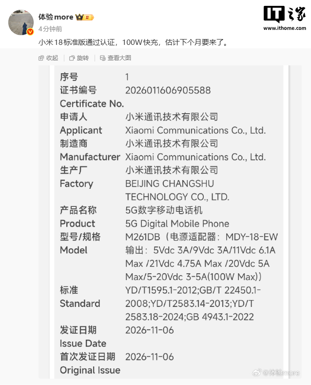
Xiaomi 18 표준 스마트폰, 100W 고속충전 지원 3C 인증 통과
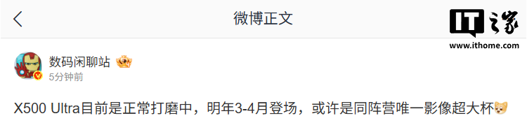
vivo X500 Ultra, 내년 3~4월 출시 예정, 동급 유일한 울트라 프리미엄 카메라 스마트폰이 될 것
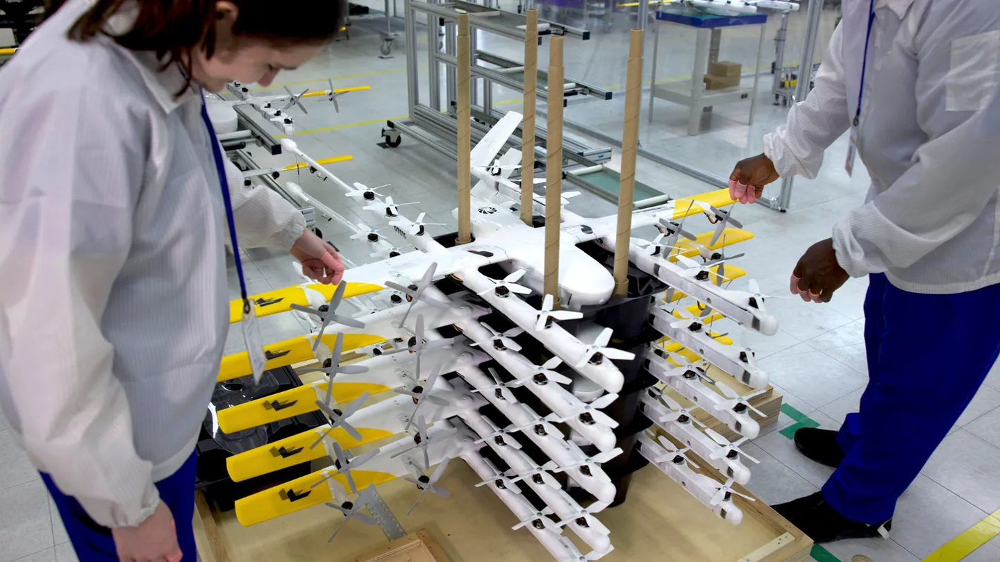
미국 '항공 배달' 경쟁 심화: 구글 계열 Wing, 1억 2,500만 달러 투자해 드론 공장 건설, 월마트 270개 매장 겨냥
Planet AI, 10년 이상 위성 이미지 변화를 한 문장으로 검색하는 '지구에 질문하기' 서비스 공개
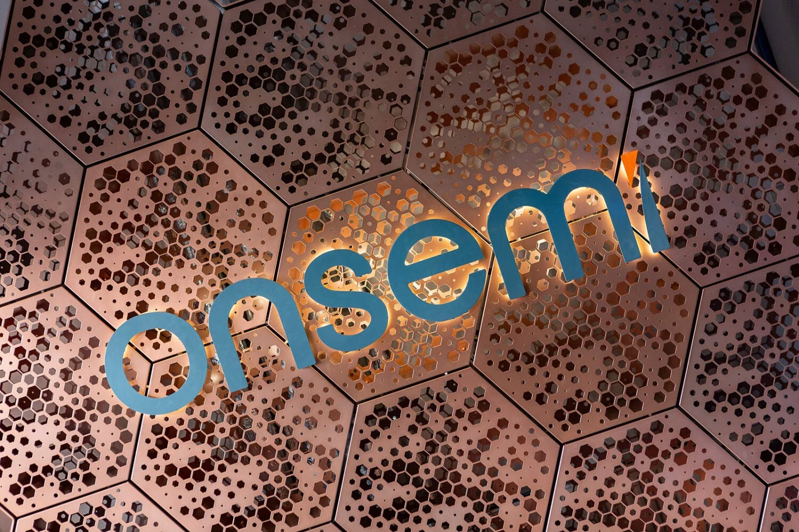
온세미, 20억 달러 규모 체코 SiC 웨이퍼 공장 확장 프로젝트 포기 선언
메모리 가격 폭락 전, 각 스마트폰 제조사의 "울트라" 모델 일부 이미지 구성은 이미 단종된 하드웨어에 속한다
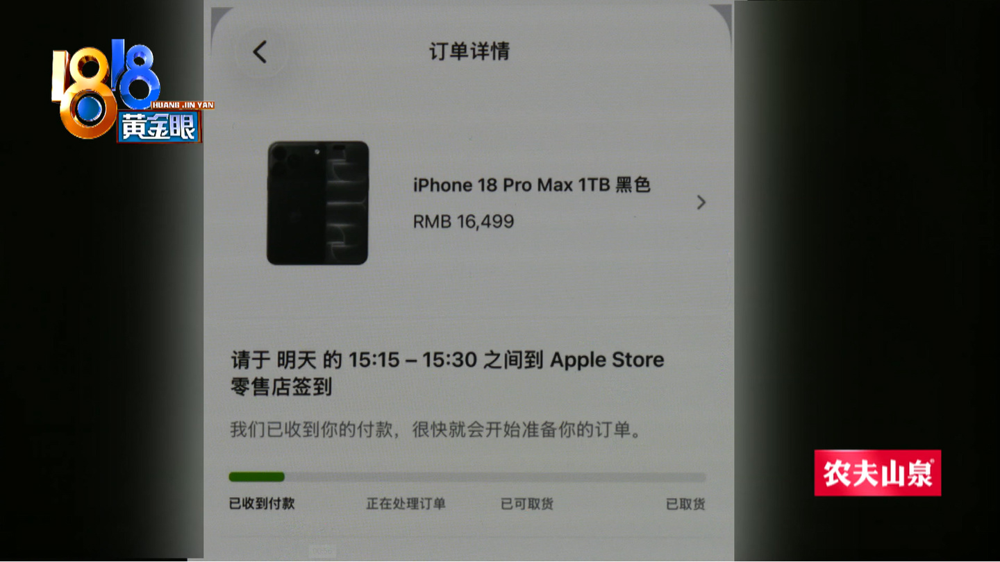
남성, Apple iPhone 18 Pro Max 3대 판매 후 차익 남겼지만 사기 연루 자금으로 은행 계좌 동결
한국 스타트업 Lutra, HOA A1 카메라 출시: 독특한 형태로 사진작가와 모델의 눈맞춤 유지 가능
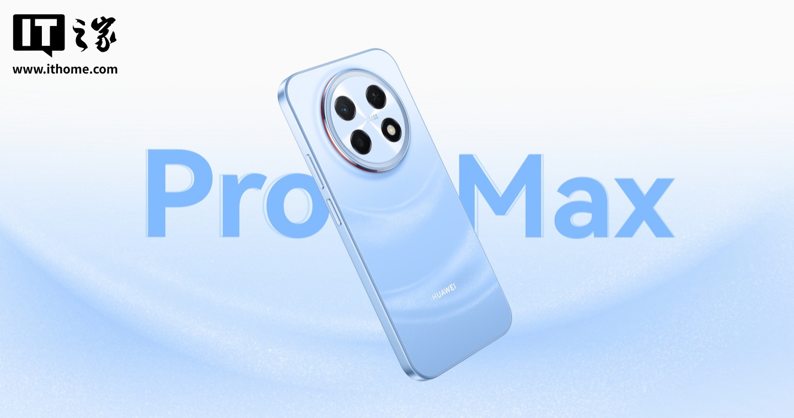
Huawei 창샹 100 시리즈 스마트폰 첫 판매량 공개: 총 21만 5천 대, Pro Max 모델이 약 60% 차지
Honor 700 시리즈 스마트폰 공식 웹사이트 출시: Pro/표준/S 세 가지 모델, 전 모델 후면 스크린 디자인
검색 결과가 없습니다
다른 검색어를 입력하거나 필터를 초기화해 보세요.